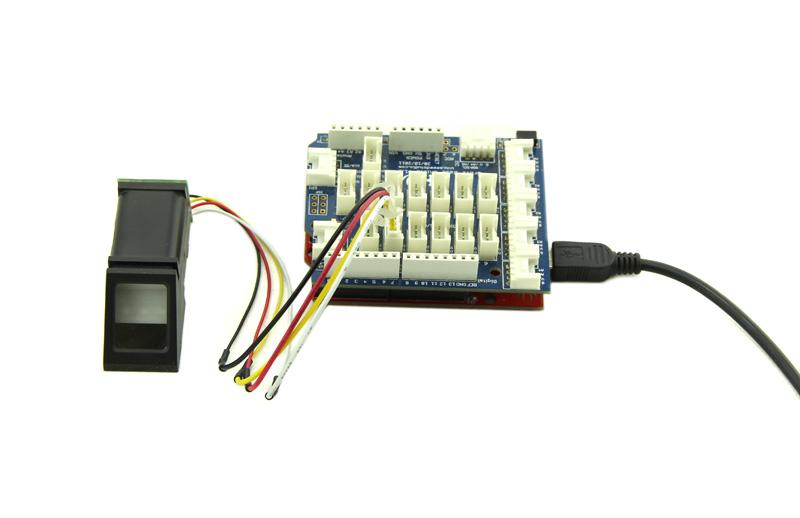
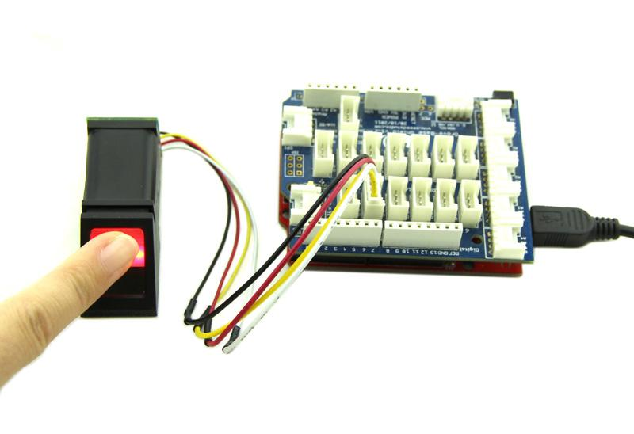
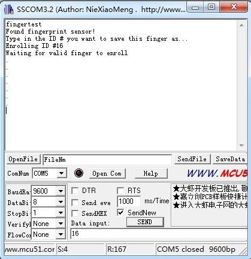
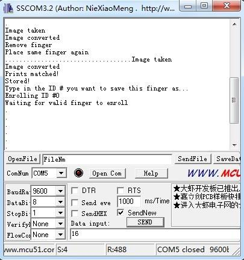
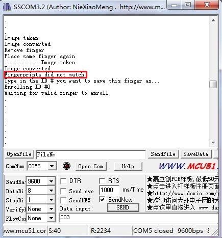
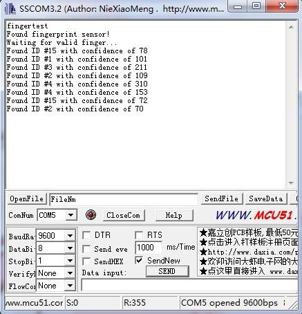

The Finger Print Sensor is one optical fingerprint sensor which will make fingerprint detection and verification adding super simple.There's a high powered DSP chip AS601 that does the image rendering, calculation, feature-finding and searching. You can also enroll new fingers directly - up to 162 finger prints can be stored in the onboard FLASH memory. There's a red LED in the lens which will light up during taking photos so that you know its working condition. It is easy to use and by far the best fingerprint sensor you can get.
Model:SEN04172P
| Pin Numble | Name | Type | Function Description |
|---|---|---|---|
| 1 | Vin | in | Positive Power Supply Input Terminal(Line color:Red) |
| 2 | TD | out | Serial data output, TTL logic levels(Line color: Yellow) |
| 3 | RD | in | Serial data input, TTL logic levels(Line color: White) |
| 4 | GND | - | Signal ground(Line color: Black) |
The Finger Print Sensor module is typically used in safes - there's a high powered DSP chip that does the image rendering, calculation, feature-finding and searching. Connect to any microcontroller or system with TTL serial, and send packets of data to take photos, detect prints, hash and search. You can also enroll new fingers directly - up to 162 finger prints that can be stored in the onboard FLASH memory. There's a red LED in the lens which will light up during taking photos so that you know its working condition.
When you plug in the power, you can see the red LED blink which indicates the sensor is working.

The library can enroll and search so its perfect for any project. It can help you get running in under 10 minutes. There are basically two requirements for using the optical fingerprint sensor. First one, you'll need to enroll fingerprints - that means assigning ID #'s to each print so you can query them later. Once you've enrolled all your prints, you can easily 'search' the sensor, asking it to identify which ID (if any) has currently been photographed.




Once you have the finger enrolled, it's a good idea to do a quick test to make sure it can be found in the database.

Finger Print Sensor Library File
Finger Print Sensor Datasheet
Copyright (c) 2008-2016 Seeed Development Limited (www.seeedstudio.com / www.seeed.cc)